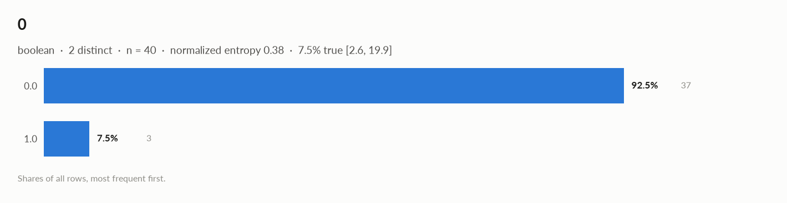
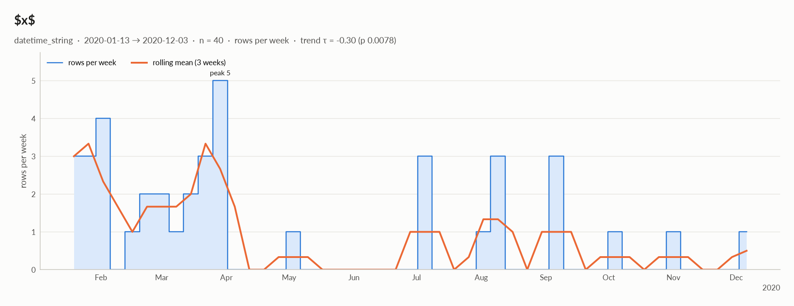

elessar report
40 rows × 4 columns · pandas.DataFrame · read in 0.0s · generated 2026-10-28 11:01 by elessar 0.3.0
Key findings Overall statistics Target analysis Distributions Outliers Data quality Multivariate statistics Preparation plan Attribute statistics Run Key findings
2 features show no significant link with 0: a, a.1 MEDIUM duplicate or non-string column names were renamed (a, a.1, ...)MEDIUM $x$: should-be-datetime: df['$x$'] = pd.to_datetime(df['$x$'], errors='coerce', format='mixed')MEDIUM 0: imbalanced target: '1.0' is only 7.5% of rows -> stratify splits, use PR-AUC / class weightsMEDIUM a.1: should-be-numeric: df['a.1'] = pd.to_numeric(df['a.1'], errors='coerce')Overall statistics
Rows 40 Columns 4 Memory 2.7 KB Potential saving 720 B Pandas dtypes float64=2, str=1, object=1 Semantic types numeric_continuous=2, boolean=1, datetime_string=1 Duplicate rows 0 (0.0%) Missing cells 3.1% Target 0
Numeric columns at a glance
column count missing mean std min median max skew kurtosis outliers best fit a35 12.5% 0.0396 0.9345 -2.134 -0.07635 2.549 0.288 0.718 2.9% logistic(loc=0.0171, scale=0.515) a.140 0.0% 0.2525 1.041 -2.214 0.407 2.15 -0.515 -0.125 0.0% norm(loc=0.253, scale=1.03)
Categorical columns at a glance
column type count missing distinct most frequent share entropy 0boolean 40 0.0% 2 0.0 92.5% 0.384
Target analysis
Target: 0 (boolean)
feature type method association test n p_adj sig AUC MI flag a numeric_continuous eta +0.231 mann-whitney 35 0.28 0.229 0.251 a.1 numeric_continuous eta +0.013 mann-whitney 40 0.92 0.477 0.141
Is the target different when a feature is missing?
feature % missing significant p_adj detail a12.5 no 0.5 0=1.0: 0% when missing vs 9% when present
Distributions
Normality is tested four ways (Shapiro-Wilk on up to 5,000 values, D'Agostino K², Jarque-Bera, Anderson-Darling); the verdict is 'not normal' when at least half of them reject at alpha 0.05. Every candidate distribution is fitted by maximum likelihood and ranked by AIC; the Akaike weight is its relative support among the candidates.
With thousands of values every test rejects even a good fit, so read KS D (the largest gap between the fitted and the observed cumulative distribution) as the size of the misfit: below 0.03 close, below 0.08 fair, above poor. KS p-values are optimistic since the parameters come from the same data. For integer columns the gap is measured on the integer support and the p-value comes from a chi-square goodness-of-fit test.
column n normality tests rejecting best fit parameters weight ΔAIC to 2nd KS D KS p shape a35 normal 0 of 4 logistic loc=0.0171, scale=0.515 0.39 0.3 (normal) 0.066 (fair) 1 roughly symmetric a.140 normal 0 of 4 normal loc=0.253, scale=1.03 0.39 1.0 (logistic) 0.110 (poor) 0.67 moderately left-skewed
Outliers
Three methods per numeric column: 3 sigma (|value - mean| > 3 standard deviations), boxplot (outside the Tukey fences Q1 - 1.5 IQR, Q3 + 1.5 IQR) and modified z (Hampel: |0.6745 (value - median) / MAD| > 3.5). A consensus outlier is flagged by at least two.
column 3 sigma boxplot modified z consensus fences action a0 1 0 0 (0.0%) [-2.3, 2.297] keep a.10 0 0 0 (0.0%) [-2.348, 2.94] keep
Data quality
severity column message medium - duplicate or non-string column names were renamed (a, a.1, ...) medium $x$should-be-datetime: df['$x$'] = pd.to_datetime(df['$x$'], errors='coerce', format='mixed') medium 0imbalanced target: '1.0' is only 7.5% of rows -> stratify splits, use PR-AUC / class weights medium a.1should-be-numeric: df['a.1'] = pd.to_numeric(df['a.1'], errors='coerce') info - dtype optimizations save ~720 B: a -> float32, 0 -> float32, $x$ -> datetime64 (see quality['dtype_optimizations'] for code) info $x$rows per week decrease over time (Kendall tau -0.30, p=0.0078)
Memory: suggested dtypes save 720 B
column current suggested saving code afloat64 float32 160 B (50%) df['a'] = df['a'].astype('float32')0float64 float32 160 B (50%) df['0'] = df['0'].astype('float32')$x$str datetime64 400 B (56%) df['$x$'] = pd.to_datetime(df['$x$'], errors='coerce', format='mixed')
Multivariate statistics
Dimensionality reduction
PCA not applicable: needs at least 3 numeric columns and enough rows (2 columns, 40 rows)
Associations between columns
3 pairs tested, 0 significant after Benjamini-Hochberg correction (alpha 0.05).
Multicollinearity (VIF)
Preparation plan
Cleaning: wrong formats 2, missing data 1. Transformation: decomposition 1, normalization 1.
Cleaning
action column why code Wrong formats $x$should-be-datetime df['$x$'] = pd.to_datetime(df['$x$'], errors='coerce', format='mixed')Wrong formats a.1should-be-numeric df['a.1'] = pd.to_numeric(df['a.1'], errors='coerce')Missing data a12.5% missing: impute with the mean df['a'] = df['a'].fillna(df['a'].mean())
Transformation
action column why code Decomposition $x$a date is not a feature: decompose into calendar parts d = pd.to_datetime(df['$x$'], errors='coerce')
df['$x$' + '_year'], df['$x$' + '_month'] = d.dt.year, d.dt.month
df['$x$' + '_dow'], df['$x$' + '_hour'] = d.dt.dayofweek, d.dt.hourNormalization - 2 roughly symmetric columns: z-score them (mean 0, sd 1) for linear and distance models cols = ['a', 'a.1']
df[cols] = (df[cols] - df[cols].mean()) / df[cols].std()
Attribute statistics
column type missing distinct alerts anumeric_continuous 12.5% 35 0 0boolean 0.0% 2 1 $x$datetime_string 0.0% 31 1 a.1numeric_continuous 0.0% 40 0
a · numeric_continuousfloat64 · float64 dtype: 35 distinct real values
Profile
type numeric_continuous dtype float64 values 35 missing 5 (12.5%) distinct 35 (100.0%) memory 320 B
Center
mean 0.0396 95% CI of mean [-0.2814, 0.3606] median -0.07635 95% CI of median [-0.4412, 0.4005] trimmed mean 0.01405 geometric mean - harmonic mean -
Spread
std 0.9345 variance 0.8732 sem 0.158 IQR 1.149 MAD 0.5603 CV 23.6 range 4.683
Quantiles
min -2.134 p1 -1.87 p5 -1.244 p25 -0.5757 p50 -0.07635 p75 0.5735 p95 1.513 p99 2.251 max 2.549 sum 1.386
Shape
skewness 0.288 excess kurtosis 0.718 KDE modes 1 bimodality coef. 0.271
Outliers & counts
IQR fences [-2.3, 2.297] outside fences 1 (2.9%) |z| > 3 0 (0.0%) modified z > 3.5 0 (0.0%) zeros 0 negatives 18 infinite 0
Row order
monotonic no lag-1 autocorrelation 0.188 (p 0.27)
Normality: normal (n = 35)
test statistic p-value at alpha 0.05 Shapiro-Wilk 0.9894 0.98 consistent with normal D'Agostino K² 1.681 0.43 consistent with normal Jarque-Bera 0.7411 0.69 consistent with normal Anderson-Darling 0.1638 0.15 consistent with normal
Best fits (continuous, 13 candidates fitted on 35 values)
# distribution parameters AIC ΔAIC weight BIC KS D KS p 1 logistic loc=0.0171, scale=0.515 97.2358 0.0 0.39 100.346 0.066 (fair) 1 2 normal loc=0.0396, scale=0.921 97.5674 0.3 0.33 100.678 0.064 (fair) 1 3 Student t df=10.9, loc=0.0226, scale=0.835 99.2249 2.0 0.15 103.891 0.060 (fair) 1
0 · boolean · 1 alertfloat64 · float64 dtype: only 0/1 values
INFO imbalanced: '0.0' is 92.5% of valuesProfile
type boolean dtype float64 values 40 missing 0 (0.0%) distinct 2 (5.0%) memory 320 B mode 0.0 ×37
Labels
cardinality 2 entropy 0.38 bits (0.38 of max) Gini impurity 0.139 imbalance ×12.33 rare labels 0 (0.0% of rows) uniform? chi² p 8e-08 true 7.5% [2.6, 19.9]
Most frequent values
value count share 0.037 92.5% 1.03 7.5%

$x$ · datetime_string · 1 alertstr · 100% of values parse as dates
INFO rows per week decrease over time (Kendall tau -0.30, p=0.0078)Profile
type datetime_string dtype str values 40 missing 0 (0.0%) distinct 31 (77.5%) memory 720 B mode 08/04/2020 ×3
Time
first 2020-01-13 last 2020-12-03 span 325 days 00:00:00 frequency ~3 days 00:00:00 (irregular) duplicated timestamps 9 in the future 0 before 1900 0 largest gap 63 days 00:00:00 (2020-05-01 → 2020-07-03) trend of rows per week tau -0.30 (p 0.0078)
Most frequent values
value count share 08/04/20203 7.5% 16/01/20202 5.0% 15/03/20202 5.0% 09/03/20202 5.0% 24/03/20202 5.0% 20/03/20202 5.0% 07/04/20202 5.0% 02/01/20202 5.0% 09/01/20201 2.5% 13/01/20201 2.5%
Rows by weekday: Mon 4, Tue 7, Wed 3, Thu 8, Fri 6, Sat 7, Sun 5 Rows by month: Jan 8, Feb 6, Mar 12, May 1, Jul 3, Aug 4, Sep 3, Oct 1, Nov 1, Dec 1 should-be-datetime : df['$x$'] = pd.to_datetime(df['$x$'], errors='coerce', format='mixed')
a.1 · numeric_continuousobject · numbers in object column: 40 distinct real values
Profile
type numeric_continuous dtype object values 40 missing 0 (0.0%) distinct 40 (100.0%) memory 1.2 KB
Center
mean 0.2525 95% CI of mean [-0.08026, 0.5853] median 0.407 95% CI of median [-0.2149, 0.7703] trimmed mean 0.3168 geometric mean - harmonic mean -
Spread
std 1.041 variance 1.083 sem 0.1645 IQR 1.322 MAD 0.681 CV 4.121 range 4.365
Quantiles
min -2.214 p1 -2.091 p5 -1.633 p25 -0.365 p50 0.407 p75 0.9568 p95 1.726 p99 2.029 max 2.15 sum 10.1
Shape
skewness -0.515 excess kurtosis -0.125 KDE modes 1 bimodality coef. 0.405
Outliers & counts
IQR fences [-2.348, 2.94] outside fences 0 (0.0%) |z| > 3 0 (0.0%) modified z > 3.5 0 (0.0%) zeros 0 negatives 16 infinite 0
Row order
monotonic no lag-1 autocorrelation 0.044 (p 0.78)
Normality: normal (n = 40)
test statistic p-value at alpha 0.05 Shapiro-Wilk 0.9712 0.39 consistent with normal D'Agostino K² 1.973 0.37 consistent with normal Jarque-Bera 1.745 0.42 consistent with normal Anderson-Darling 0.3807 0.15 consistent with normal
Best fits (continuous, 13 candidates fitted on 40 values)
# distribution parameters AIC ΔAIC weight BIC KS D KS p 1 normal loc=0.253, scale=1.03 119.686 0.0 0.39 123.064 0.110 (poor) 0.67 2 logistic loc=0.315, scale=0.589 120.655 1.0 0.24 124.033 0.085 (poor) 0.91 3 Student t df=7.22e+10, loc=0.253, scale=1.03 121.686 2.0 0.14 126.753 0.110 (poor) 0.67
should-be-numeric : df['a.1'] = pd.to_numeric(df['a.1'], errors='coerce')Run
Source pandas.DataFrame · read in 0.0s Processes 3 for the analysis, 3 for the charts (14 cores available) Time 1.9s (load 0.0s, columns 0.2s, associations 0.2s, quality 0.0s, charts 1.3s) Significance alpha 0.05, Benjamini-Hochberg false discovery rate per family of tests Versions elessar 0.3.0 · Python 3.12.14 · pandas 3.1.0 · numpy 2.5.4 · scipy 1.18.1